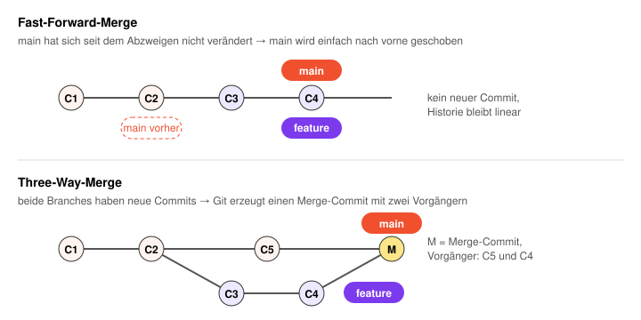

Lektion 2.1 — Teil 2: Branches & Zusammenarbeit
Branches & Merge
Lernziele
- Erklären, wozu Branches dienen und was ein Branch technisch ist
- Die Bedeutung von HEAD beschreiben
- Branches anlegen, wechseln, auflisten und löschen
- Unfertige Änderungen mit
git stashbeiseitelegen - Fast-Forward-Merge und Three-Way-Merge unterscheiden und durchführen
- Branches pushen und Remote-Branches mit
fetchundpullabgleichen
1 — Wozu Branches?
Bisher lagen alle Commits hintereinander auf main. Das wird schnell zum Problem: Du arbeitest
an einer neuen Galerie, die erst halb fertig ist — und plötzlich muss ein Tippfehler auf der
Startseite sofort korrigiert werden. Oder zwei Teammitglieder entwickeln gleichzeitig verschiedene
Funktionen und wollen sich nicht gegenseitig mit halbfertigem Code stören.
Ein Branch (Zweig) ist eine eigene Entwicklungslinie. Auf einem Branch kannst du
beliebig committen, ohne main zu verändern. Ist die Arbeit fertig, wird der Branch mit
main zusammengeführt (Merge). Ist das Experiment gescheitert, löschst du den
Branch einfach.
main enthält immer einen funktionierenden Stand. Neue Arbeit — Funktionen, Fehlerbehebungen,
Experimente — entsteht auf eigenen Branches.
2 — Was ist ein Branch technisch?
Ein Branch ist erstaunlich einfach: ein beweglicher Name, der auf einen Commit zeigt. Git speichert dafür nur den Hash des Commits. Einen Branch anzulegen kostet deshalb praktisch nichts — es werden keine Dateien kopiert.
- Wenn du committest, rückt der Branch, auf dem du gerade arbeitest, automatisch auf den neuen Commit vor.
- Die anderen Branches bleiben stehen, wo sie sind.
- HEAD ist ein besonderer Zeiger, der auf den Branch zeigt, auf dem du gerade arbeitest. HEAD bestimmt, welche Dateien in deinem Arbeitsverzeichnis liegen und welcher Branch beim nächsten Commit vorrückt.
A ─ B ─ C ← main
\
D ─ E ← feature/hobbys ← HEADWechselst du zu main, zeigt HEAD auf main, und Git tauscht die Dateien im Arbeitsverzeichnis gegen den Stand von Commit C aus. Wechselst du zurück, sind die Dateien von E wieder da.
3 — Branches anlegen, wechseln und löschen
git branch
# * main ← * markiert den aktuellen Branch
git switch -c feature/hobbys # neuen Branch anlegen und hinwechseln
# Switched to a new branch 'feature/hobbys'
# ... Dateien bearbeiten, committen wie gewohnt ...
git commit -am "Hobbys ergänzt"
git switch main # zurück zu main
git log --oneline --all # Commits aller Branches anzeigen| Befehl | Wirkung |
|---|---|
git branch | lokale Branches auflisten |
git branch name | Branch anlegen (ohne zu wechseln) |
git switch name | zu einem Branch wechseln |
git switch -c name | Branch anlegen und wechseln |
git branch -d name | Branch löschen — nur möglich, wenn er bereits gemergt ist |
git branch -D name | Branch löschen, auch wenn er nicht gemergt ist (Commits gehen verloren!) |
git log --oneline --graph --all | alle Branches als Grafik |
In älteren Anleitungen findest du git checkout name und git checkout -b name. Sie bedeuten
dasselbe wie git switch bzw. git switch -c. switch gibt es seit Git 2.23 (2019) und ist
eindeutiger, weil checkout noch viele andere Aufgaben hat.
Branch-Namen
Teams verwenden meist ein Präfix, das den Zweck zeigt, und Kleinbuchstaben mit Bindestrichen:
| Präfix | Zweck | Beispiel |
|---|---|---|
feature/ | neue Funktion | feature/kontaktformular |
fix/ | Fehlerbehebung | fix/menue-mobil |
docs/ | Dokumentation | docs/readme-installation |
4 — Wechseln mit unfertigen Änderungen: git stash
Hast du geänderte, nicht committete Dateien, die sich im Ziel-Branch unterscheiden, verweigert Git den Wechsel — sonst gingen deine Änderungen verloren:
git switch main
# error: Your local changes to the following files would be overwritten by checkout:
# style.css
# Please commit your changes or stash them before you switch branches.
# AbortingEntweder du committest die Änderung, oder du legst sie mit git stash vorübergehend beiseite. Der Stash ist ein Stapel für unfertige Arbeit:
git stash # Änderungen beiseitelegen, Arbeitsverzeichnis ist wieder sauber
git switch main
# ... dringende Korrektur auf main committen ...
git switch feature/hobbys
git stash pop # beiseitegelegte Änderungen zurückholen
git stash list # Inhalt des Stapels anzeigenIst eine geänderte Datei in beiden Branches gleich, nimmt Git deine Änderung einfach mit in den
anderen Branch. Das ist praktisch, wenn du bemerkst, dass du auf dem falschen Branch zu arbeiten
begonnen hast: git switch -c richtiger-branch — die Änderungen wandern mit.
5 — Merge: Branches zusammenführen
Ein Merge holt die Commits eines anderen Branches in den aktuellen Branch. Du wechselst also zuerst in den Branch, der die Änderungen bekommen soll, und nennst dann den Branch, der übernommen wird:
git switch main # Ziel
git merge feature/hobbys # QuelleJe nachdem, was seit dem Abzweigen passiert ist, führt Git den Merge auf eine von zwei Arten durch:

Fast-Forward
Gab es auf main seit dem Abzweigen keine neuen Commits, muss Git nichts zusammenführen. Es schiebt main einfach auf den letzten Commit des Feature-Branches vor:
git merge feature/hobbys
# Updating 6c29835..e5b0236
# Fast-forward
# index.html | 2 +-
# 1 file changed, 1 insertion(+), 1 deletion(-)Three-Way-Merge
Haben beide Branches neue Commits, vergleicht Git drei Stände: den gemeinsamen
Vorgänger und die beiden Branch-Enden. Daraus entsteht ein neuer Merge-Commit mit
zwei Vorgängern. Git schlägt dafür die Message „Merge branch '…'“ vor und öffnet den Editor; mit
--no-edit übernimmst du sie direkt:
git merge feature/hobbys --no-edit
# Merge made by the 'ort' strategy.
# style.css | 1 +
# 1 file changed, 1 insertion(+)
git log --oneline --graph --all
# * f785bae (HEAD -> main) Merge branch 'feature/hobbys'
# |\
# | * ceb8dc1 (feature/hobbys) Hobby-Liste gestylt
# * | 4cecc89 Jahr im Footer aktualisiert
# |/
# * e5b0236 Hobbys ergänzt
# * 6c29835 Steckbrief-Seite angelegtDanach ist der Feature-Branch überflüssig: git branch -d feature/hobbys. Seine Commits bleiben über den Merge-Commit in main erhalten.
Git führt Änderungen an verschiedenen Dateien oder verschiedenen Stellen derselben Datei automatisch zusammen. Wurden aber dieselben Zeilen in beiden Branches unterschiedlich geändert, kann Git nicht entscheiden, welche Version gilt, und meldet CONFLICT. Git markiert die Stelle dann in der Datei mit <<<<<<<, ======= und >>>>>>>. Du entscheidest dich für eine Version (oder kombinierst beide), entfernst die Markierungen, und schließt den Merge mit git add und git commit ab. Lektion 2.3 spielt einen solchen Konflikt Schritt für Schritt durch.
6 — Branches auf GitHub
Branches sind zunächst nur lokal. Damit andere sie sehen (und du sie auf einem anderen Rechner hast), pushst du sie. Beim ersten Push eines Branches verknüpft -u ihn mit dem gleichnamigen Branch am Server:
git switch -c feature/kontakt
# ... committen ...
git push -u origin feature/kontakt
# remote: Create a pull request for 'feature/kontakt' on GitHub by visiting:
# remote: https://github.com/maxmuster/steckbrief/pull/new/feature/kontakt
# To https://github.com/maxmuster/steckbrief.git
# * [new branch] feature/kontakt -> feature/kontakt
# branch 'feature/kontakt' set up to track 'origin/feature/kontakt'.
Lokal kennt Git danach Remote-Tracking-Branches wie origin/feature/kontakt: Gits
Erinnerung daran, wo der Branch am Server zuletzt stand. Du bearbeitest sie nie direkt; sie
werden bei jedem Kontakt mit dem Server aktualisiert.
git branch -a # lokale und Remote-Tracking-Branches
# * feature/kontakt
# main
# remotes/origin/feature/kontakt
# remotes/origin/main
git branch -vv # mit Verknüpfung und Abstand zum Server
# * feature/kontakt bf8240a [origin/feature/kontakt] Kontakt ergänzt
# main f785bae [origin/main: ahead 4] Merge branch 'feature/hobbys'„ahead 4“ bedeutet: Der lokale main hat 4 Commits, die am Server noch fehlen — Zeit für git push auf main. Umgekehrt würde „behind“ heißen, dass am Server neuere Commits liegen.
fetch und pull
| Befehl | Wirkung |
|---|---|
git fetch | Lädt neue Commits und Branches vom Server und aktualisiert die Remote-Tracking-Branches (origin/…). Deine Branches und Dateien bleiben unverändert — ungefährlich, jederzeit möglich. |
git pull | git fetch + Merge von origin/<branch> in den aktuellen Branch. Verändert deinen Branch und deine Dateien. |
Mit git fetch und anschließendem git status oder git log --oneline --graph --all siehst du, was am Server passiert ist, bevor du es übernimmst.
| Aufgabe | Befehl |
|---|---|
| Einen Branch einer Kollegin lokal bearbeiten | git fetch, dann git switch feature/galerie — Git legt den lokalen Branch automatisch passend zu origin/feature/galerie an |
| Einen Branch am Server löschen | git push origin --delete feature/kontakt |
Am Server gelöschte Branches auch lokal aus origin/… entfernen | git fetch --prune |
Projektschritt
Hobby-Abschnitt auf einem eigenen Branch
- Lege den Branch
feature/hobbysan und ergänze eine Liste deiner Hobbys. Committe. - Ergänze in
style.csseine Regel für die Liste. Committe. - Wechsle zu
mainund aktualisiere dort das Jahr im Footer (eigener Commit). Jetzt haben beide Branches neue Commits. - Merge den Feature-Branch in
main, sieh dir den Graph an, lösche den Branch und pushe.
<h2>Hobbys</h2>
<ul class="hobbys">
<li>Klettern</li>
<li>Gitarre</li>
</ul>git switch -c feature/hobbys
git commit -am "Hobbys ergänzt"
git commit -am "Hobby-Liste gestylt"
git switch main
git commit -am "Jahr im Footer aktualisiert"
git merge feature/hobbys --no-edit
git log --oneline --graph --all
git branch -d feature/hobbys
git pushErgebnis: Unter Insights → Network zeigt GitHub die Verzweigung und den Merge-Commit grafisch.
Häufige Fehler
3 Fehler · zum Aufklappen klicken
Auf feature/hobbys wird git merge main ausgeführt, in der Annahme, die Hobbys kämen damit nach main. Tatsächlich hat nur der Feature-Branch die neuen Commits von main bekommen.
Merge holt Änderungen in den aktuellen Branch. Zuerst in den Ziel-Branch wechseln (git switch main), dann git merge feature/hobbys.
Nach einer Pause wird direkt weitergearbeitet — aber man ist noch auf main. git status zeigt „On branch main“.
Vor dem Arbeiten Branch prüfen (Statusleiste der IDE, git status). Noch nicht committete Änderungen nimmst du mit git switch -c feature/… auf einen neuen Branch mit.
git push auf einem neuen Branch meldet fatal: The current branch feature/kontakt has no upstream branch.
Beim ersten Push den Server-Branch angeben: git push -u origin feature/kontakt. Danach reicht git push.
Aufgaben
3 Aufgaben + Bonus · zum Aufklappen klicken
Lege in einem Übungsrepository zwei Branches an und mache auf jedem zwei Commits. Führe nach jedem Schritt git log --oneline --graph --all aus und beobachte, wo HEAD, main und die Branches stehen. Zeichne den Endzustand als Diagramm wie in Abschnitt 2.
Erzeuge gezielt beide Merge-Arten: einmal einen Fast-Forward-Merge, einmal einen Three-Way-Merge. Erkläre anhand der Ausgabe von git log --oneline --graph, woran man den Unterschied erkennt. Probiere zusätzlich git merge --no-ff bei einer Fast-Forward-Situation aus: Was passiert?
Du arbeitest auf feature/galerie und hast nicht committete Änderungen. Auf main muss sofort ein Tippfehler korrigiert und gepusht werden. Spiele die Situation mit git stash durch und schreibe die Befehlsfolge auf.
Bearbeite auf learngitbranching.js.org im Bereich „Main“ die Levels „Introduction Sequence“ (1–4). Die Seite visualisiert jeden Befehl als Graph.
Quiz
5 Fragen · zum Aufklappen klicken
Frage 1 Was ist ein Branch in Git technisch gesehen?
Frage 2 Du willst die Arbeit aus feature/login in main übernehmen. Welche Befehlsfolge ist richtig?
main wechseln und den Quell-Branch mergen.Frage 3 Wann führt Git einen Fast-Forward-Merge durch?
Frage 4 Was unterscheidet git fetch von git pull?
git pull = git fetch + Merge. fetch allein verändert weder deine Branches noch deine Dateien.Frage 5 Welche Aussagen über HEAD stimmen?
Mehrere Antworten sind richtig.